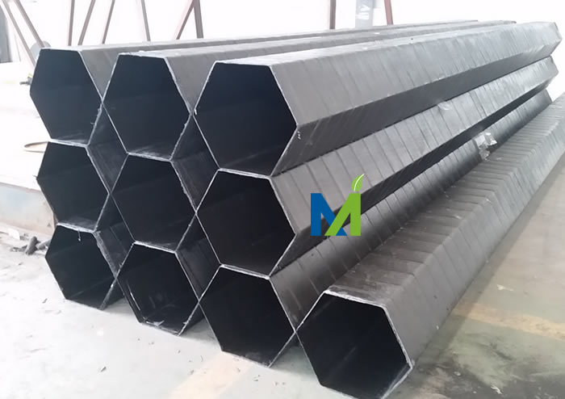

江西华邦复合材料有限公司专业从事电除雾器、湿式电除尘器及阳极管等除尘设备的研发生产
 13870005775
1387000577513870005775
邮箱：jiangxihb@163.com江西华邦复合材料有限公司专注于烟气污染深度治理领域，致力于湿式静电除尘器、电除雾器及脱硫脱硝等烟气处理领域环保工程技术咨询、设计、制作
、安装及维护等相关技术服务，湿电相关技术探讨咨询张工18633235200，以下这篇论文电除雾器在硫酸生产尾气中的应用分析的技术内容，现转发给大家参考：
下面的论文来源：中国化工贸易 作者:黄世雄
硫酸生产企业所排放的尾气是环境治理的重点，因此在生产硫酸的过程中应并重经济效益与环保效益。在处理硫酸生产中的尾气时面临着许多难题，其中酸雾处理问题亟待解决。在硫酸生产过程中应用电除雾器是解决酸雾问题的有效途径，因此必须重视在硫酸生产线中装设电除雾器。本文分析了硫酸生产尾气中除雾的意义，同时探讨了电除雾器在硫酸生产尾气中的应用方法，包括结构与工作原理，质量控制方法及应用实例。此外，还简单阐述了应用电除雾器时需要注意的问题。
江西华邦硫酸尾气湿式电除雾器运行案例
硫酸是一种较为常见的工业生产原料，主要被用于蓄电池、洗涤剂、颜料、药物及肥料等工业产品的制造当中，在染料生产、金属冶炼及石油净化过程中也需要使用到硫酸[1]。在硫酸生产中排放的尾气可对环境造成污染，因此必须采用科学合理的技术对硫酸生产尾气进行处理。本文结合实践工作经验对硫酸生产尾气处理中应用电除雾器的相关问题进行了探讨，旨在有效提高硫酸生产企业的经济效益及促进硫酸生产工业的发展。
1.硫酸生产尾气中的除雾问题
为了生产出纯度及浓度较高的硫酸，在实际工作中通常需要采用转换率较高的工艺技术，目前我国所采用的硫酸生产工艺转换率基本可以达到95%以上，在转换率较高的同时，尾气处理工作还有待完善，尤其是硫酸雾的清除问题。
(1)在生产硫酸时，气量、气浓会出现大幅度波动现象，在这样的条件下极易导致酸温及酸浓得不到有效控制，进而造成硫酸蒸汽超过吸收临界值或饱和值。上述情况发生后，蒸汽冷凝时就会形成大量酸雾，如无法有效除去尾气中的酸雾，将会导致脱硫装置的运行受到影响。目前硫酸生产中多使用填料塔、空塔等核心脱硫设备，脱硫设备除雾能力有限，即使在脱硫中应用碱性吸收剂也难以获得理想的除雾效果。
(2)冷凝器及净化工段是硫酸雾形成的主要区域，生成的酸雾粒子较小，一般<5um，因此机械过滤或机械拦截除雾效率相对较低。当酸雾颗粒进入脱硫塔后如采用湿法脱硫工艺，则将会增大烟气含湿值，如此一来，不但无法将尾气中的酸雾去除，同时还会导致酸雾增加。酸雾粒径一般在0.1um～0.8um之间，与可见光波长相接近，因此酸雾能够高效散射可见光;当尾气被排出时就会出现排烟尾羽现象。排烟尾羽一般为白色，在受到烟气温度、环境相对湿度及温度等影响下，白烟会发生变化，环境相对湿度越大时，白烟就会越长，甚至可达到1000m左右。如烟气中存在粉尘、溶胶物质及氮氧化物等，还会对烟气透明度造成影响并导致烟气变成红棕色，如此一来就可能使硫酸生产企业尾气排放黑度超出相关标准。通过上述分析可知，硫酸雾可对硫酸生产过程产生不利影响，所以必须应用电除雾器将尾气中的硫酸雾清除。
2.电除雾器在硫酸生产尾气中的应用分析
2.1结构与工作原理
电除雾器的结构与工作原理如下：
(1)结构形式。在硫酸生产中所采用的电除雾器由以下几个部分构成，即供电系统、上下气室、阳极管、电晕极。如将电除雾器的外形特征作为分类标准，则可以分为室外电除雾器与室内电除雾器;如按照沉淀极形状对电除雾器进行划分，则可以分为管式与板式电除雾器。如进一步细分，则可以将管式电除雾器分为圆管式除雾器与蜂窝式除雾器，而板式电除雾器则分为同心圆式除雾器与平板式除雾器。

宁夏锌冶炼硫酸烟气电除雾器应用
(2)工作原理。电除雾器实现酸雾消除的工作原理为，在电除雾器的电晕极接通高压直流电源，接通后检查电晕极当中所释放的静电场能否使气体发生电离现象，以便保证硫酸雾气可在电离子的作用下分解为负离子与正离子。由于电晕极为阴极，在接通电源后变成负高压极，发生电子雪崩后，小颗粒如尘及酸雾等就会被异性电荷所吸引，并在电场作用力下逐渐移动到沉淀极，当沉淀极当中的尘粉及雾粒厚度达到一定程度时，就会在重力作用下流向电除雾器的底部。由于尘粉及雾粒被吸附于除雾器当中，气体则可以自由通过，因此可以实现有效消除酸雾及净化尾气的作用。经过电除雾器的尾气可直接输送到脱硫装置当中，并在脱硫阶段完成干吸处理，如此一来就能够有效控制尾气中酸雾的含量及预防出现排烟尾羽。
2.2质量控制
为了保证电除雾器能够在硫酸生产的尾气处理中发挥应有的作用，则应注重提高电除雾器运行的可靠性。要确保电除雾器能够处于安全、可靠的运行状态，并在此基础上延长电除雾器的使用寿命及提高除酸雾的效率，则必须在应用之前做好相应的质量控制工作。
(1)在采购原材料时应对材料供应方所提供的材料进行严格检测，在检测的过程中应按照ISO9001标准，确保物资质量与相关规定相符。
(2)必须重视控制电除雾器安装质量。在安装电除雾器之前要对安装人员进行相应的技能培训，并安排质保人员负责监控电除雾器安装的全过程[4]。(3)在硫酸生产线当中安装好电除雾器之后应按照JB/T8535-2007标准及安装图纸要求对安装质量进行检查，同时按照HGJ299-2008、GB50205及HG20640标准对电除雾器的安装质量进行验收，验收合格之后才能投入使用。
2.3应用实例
2.3.1除雾装置中存在的问题
某硫酸生产企业当中的工艺生产线始建于2005年，到目前为止已经投产运营了10年。硫酸生产线当中的除雾装置为管式电除雾器，电除雾器当中共有205根PVC管，PVC管的直径为300mm。在开始投入使用至投入使用的第4年，生产线当中的电除雾器运行指标均符合标准，且除雾效果良好。2010年后电除雾器的部分性能指标出现了下降趋势，在生产硫酸的过程中无法有效调节指标电流，电除雾器当中通过的电流仅为40mA左右，无法有效满足除雾需求。如此一来，后段设备生产状况也受到影响。为了改善除雾效果，该厂在了解硫酸生产现状后决定对除雾装置进行系统性的改造，改造方法为增加一台新型FRPP(增强聚丙烯)除雾器，并在此基础上对原除雾器当中的PVC管进行处理。
2.3.2电除雾器的应用
电除雾器的应用情况如下：
(1)FRPP除雾器结构如下：使用具有阻燃作用的FRPP材料制作除雾器外壳，以提高除雾器的气密性、刚度及强度，并改善除雾器外壳的耐腐蚀性。电除雾器的外型为方形，阳极管采用导电性较强、耐氧化、耐腐蚀及耐高温的FRPP材质制作而成，电除雾器整体具有质轻及强度高的特点。阳极管为六角形，沉淀极由方形管束组成，因此可增加气流的截面积及改善除雾、吸尘效果。除雾器当中的放电电极由功率大、电极强且防尘性能良好的高效极线组成。此外，阴极管的长度为5.0m，阳极管的内径为305mm～350mm，因此可以使处理的尾气量得以增加。
(2)FRPP除雾器工艺参数。恒流电源为85kV，除雾效率≥99%，沉淀极的有效面积为3.5m2～35m2，冲洗水压≤0.25MPa，气体流速为0.9m/s～1.6m/s，工作气量为0.3×104m3/h～18.5×104m3/h，工作压力≤-9kPa，工作温度≤90℃，工作介质为含有SO2的酸性气体。
(3)原除雾器当中PVC管的处理。将电除雾器的入孔拆开，随后进入到除雾器塔内对PVC管进行检查，在检查中发现部分PVC管已经被损坏，损坏的PVC管共为15条，表现为穿孔或破裂。对于已经损坏的PVC管，则在原PVC管套上新PVC管，套上新PVC管后焊接好套合部位。检测焊接质量符合要求后利用高压水冲洗PVC管上的积尘，冲洗后立即调整管内极线，以免对电除雾器的除雾作用造成影响。完成以上改造工作后开始送电进行试运行。
2.3.3应用效果
对原有的除雾装置进行改造后投送全部电场进行试运行，在试运行期间发现电除雾器当中绝缘箱的内部温度过低，且将硫酸生产的尾气通入后，发现除雾器的二次电流及二次电压均低于正常水平。对这一异常现象进行分析后发现保温材料当中的含水量过高是引起绝缘温度低于正常值的主要因素，因此在FRPP除雾器中采用矿渣棉代替原有保温材料。对保温材料进行更换后，绝缘温度明显上升，且达到了正常标准;在实际绝缘温度与设计温度相符后，除雾器的二次电流及二次电压均有了明显提高，同时也减少了鼓风机出口部位存在的酸雾。通过试运行发现，相对于普通型电除雾器，FRPP除雾器具有以下优点：制作及安装便利，对于硫酸生产过程中尾气浓度波动大、流量变化大的特点具有较强的适应性，同时二次电压及电流较高。另一方面，在对原电除雾器当中的部分PVC管进行改造前后获得了以下指标数据：改造前电除雾器的电压为40kv～43kv，改造后为55kv;改造前电流为40mA，改造后为150mA。在硫酸生产线当中正式投入使用电除雾器后，硫酸生产中的尾气质量有了明显改观，含硫量显著降低，当地环保局对该企业排放的尾气进行在线监测后发现SO2为90mg/m3，与国家制定的强制性排放标准相符。此外，在正式投入使用后，电除雾器的除雾效率达到了99.4%，除雾效率得到了有效提高，同时在烟囱中排放尾气的视觉效果良好，排放黑度达到标准，且无白烟及排烟尾羽现象出现。因此，同时收获了环保效益与经济效益。
3.应用电除雾器时需要注意的问题
电除雾器一般被应用在硫酸生产的净化工序当中，为了保证电除雾器能够有效运行，则应注意以下事项：
(1)由于电除雾器属于脱硫系统当中的一部分，而尾气在经过脱硫处理之后仍具有一定的腐蚀性，所以在硫酸生产的尾气处理中应尽量选择抗酸腐蚀能力较强的电除雾器。
(2)如将脱硫系统直接增设于原建设完成的制酸系统中，则可能会遇到场地受限的问题，难以将电除雾器独立支撑平台建设在净化工段中。针对以上问题，则可以在除沫器的出口处直接安装电除雾器，以便可以使流通面积得到有效利用。需要注意的是安装于除沫装置出口部位的电除雾器应具有相对较强的可塑性，以避免其除雾性能受到不良影响。
(3)如将电除雾器布设于WSA工艺生产线的冷凝器后，则应确保电除雾器具有相对较高的操作气速及尾气捕集效率。在设计除雾器支撑平台时，应充分考虑脱硫塔与支撑平台是否相配套，并在此基础上对电除雾器支撑平台进行优化设计，以保证除雾效率及脱硫能力能够达到相关标准。
(4)为了有效优化电除雾器运行性能，则在实际生产中可以优先选用PVC材质制作的除雾器，同时将沉淀极设计为六边形的蜂窝状。实践证明PVC材质的可塑性较高，且具有较强的抗腐蚀能力，能够在酸性气体及湿性气体中维持稳定运行。下图为脱硫装置中所采用的电除雾器横截面图。
4.结束语
综上所述，在硫酸生产过程中产生的尾气需要经过特殊处理后才能排放到大气中，以免对大气质量造成不良影响。电除雾器能够在尾气处理中发挥非常重要的作用，因此要在硫酸生产及脱硫系统当中安装电除雾器。为了有效提高电除雾器的除雾效率，并同时确保硫酸生产企业排放的尾气与环保要求相符，则应注重改善电除雾器的性能。此外，由于电除雾器的除雾效率可受到多种因素的影响，所以在应用电除雾器时应综合考虑硫酸生产的各方面情况，对电除雾器的安装质量进行有效控制，同时还要在试运行中找出电除雾器存在的不足，以便为除雾效率的提高奠定基础。
江西华邦复合材料有限公司专注于烟气污染深度治理领域，致力于湿式静电除尘器、电除雾器及脱硫脱硝等烟气处理领域环保工程技术咨询、设计、制作
、安装及维护等相关技术服务，湿电相关技术探讨咨询张工18633235200，以下这篇论文蜂窝式电除尘器绝缘子箱保温问题及改进措施的技术内容，现转发给大家参考：
目前蜂窝式电除尘器广泛应用于转炉煤气精除尘,与应用于高炉煤气、发生炉煤气及焦炉煤气等除尘(或除焦油)不同的是:转炉煤气呈饱和状态,含水量较大,温度较高,一般为 60 ℃左右,最高甚至到 70 ℃以上,介质温度对除尘效果影响不大,但由于绝缘子箱升温到高于介质的露点是电除尘器投运的一个必要条件,介质温度愈高,升温时间愈长,电除尘器等待投运的时间也愈长.目前绝缘子箱加热保温的问题已成为蜂窝式电除尘投运的一个关键问题.


通过对一体式湿电的应用工程案例的分析，认为在吸收塔上采用一体式湿电具有技术先进性，有助于燃煤电厂实现烟囱出口的“超净排放”
引言
近年来，随着我国对环保要求的提高，特别是2014年9月国家发改委、环保部、国家能源局联合发布了《关于印发〈煤电节能减排升级与改造行动计划（2014——2020年）〉的通知》，并正式将新建燃煤发电机组污染物推到了大众的视野之内，这也直接拉开中国燃煤电厂实施超净排放的序幕，湿法脱硫出口烟气携带的雾滴、气溶胶等污染物受到前所未有的关注。湿式电除尘器布置在湿法脱硫吸收塔出口、烟囱入口，可对吸收塔出口的污染物进行 “终端拦截”，进一步降低烟囱出口排放，达到“超净排放”的标准。
1 湿式电除尘器技术
1.1 工作原理
湿式电除尘器的工作原理与电除尘器基本相似，在高压直流电源的作用下，电场阴、阳极之间形成非均匀的高压电场，电晕线周围产生电晕区，电晕区中的空气发生电离，从而产生大量的负离子。烟气进入湿式电除尘器内，粉尘粒子与负离子相碰撞而荷电，带电粒子在高压电场力的作用下，向收尘极运动并沉积在阳极管内壁上释放电荷。大量雾滴在阳光的照射之下直接衍生成了液膜，并在重力的作用下又重新地进行了集液槽集中处理，只有这样，烟气中雾滴和尘粒才能够被净化。当阳极管内壁的粉尘堆积到一定厚度时，开启喷淋系统对电场阴、阳极进行水冲洗，恢复电场的除尘性能。
但是湿式电除尘器运行温度在烟气的露点以下,内部烟气、液体具有强烈的腐蚀性，因此，在选材时必须考虑采用抗腐蚀性能强的材料，以保证湿式电除尘器正常运行和使用寿命。
1.2 湿式电除尘器的发展
近年来，随着我国环保要求的提高，在前端干式电除尘器和湿法脱硫组合无法满足排放要求的情况下，湿式电除尘器被大量地应用到锅炉尾气的治理工艺中，出现了“脱硝+干式除尘器+湿法脱硫+湿式电除尘器”的烟气治理工艺。工艺路线图如图1所示。
图1 增加湿式电除尘器的烟气治理工艺流程图
在湿法脱硫后增加湿式电除尘器，在一定程度上解决了前端干式除尘器和湿法脱硫组合无法满足排放要求的问题。根据湿式电除尘器阳极板形式存在极大差异，具体可以包括金属板式湿电、导电玻璃钢管式湿电等方面，而且这些湿电都需要用应用业绩来说话，也算是获得了一些运行经验。其中，金属板式湿电和导电玻璃管式湿电应用业绩较多。2013年，在燃煤电厂开始使用金属板式湿电并投运一段时间后，金属板式湿电的弱点逐渐暴露，而导电玻璃钢管式湿电由于形式多样、布置灵活、综合性能优异，迅速崛起，成为燃煤电厂主流的湿电形式。
1.3 湿式电除尘器的结构和布置形式
湿式电除尘器的结构与干式电除尘器相类似，均有相应的进出口喇叭、壳体、灰斗、电场阴阳极等基本的结构，其主要区别在于，干式除尘器采用机械振打清灰，而湿式除尘器采用水冲洗清灰。金属板式湿电通常采用卧式，烟气水平进风水平出风 ；而导电玻璃钢管式湿电采用立式布置，烟气方向为上进下出或下进上出。目前，燃煤电厂湿式除尘器的布置形式主要有以下2种类型:
（1）分体布置。这种布置形式湿式电除尘器与FGD的吸收塔相对独立，需要有额外的场地，可以采用卧式或立式结构，便于安装和运行维护，同时布置方式也更为灵活。
（2）一体布置。一体式湿电放置在 WFGD 上方，壳体可与FGD的外壳一体成型，不增加占地面积。壳体采用玻璃钢一体成型或“碳钢+玻璃鳞片”防腐。由于为立式结构，阳极管一般为管式，材质可选用PVC、导电玻璃钢或不锈钢材质等，其中以正六边形的导电玻璃钢材质居多。冲洗水为脱硫工艺水，间歇式喷淋，冲洗后的废水直接下落，与吸收塔上方的机械除雾器冲洗水混合，回流至下方吸收塔的浆液池，进入脱硫系统循环利用。
2 一体式湿电关键技术的研究
2.1 紧凑型结构设计
湿式静电除尘工作原理与普通的电除尘相同，因此，对于湿式电除尘对粉尘的去除机理，仍然可按电除尘器的除尘效率计算公式（多依奇公式）：

S 主要是作为集尘面积而存在，而ω则是粉尘在电场中的理论驱进速度，理论驱进速度是能够直接将粉尘在电晕场中运动的难易程度的指标反映出来。在设计烟气量一定的前提下，集尘面积S 是由除尘器的结构所决定的，且与阳极管的长度、电场有效截面积和电场风速相关。因此，在一体式湿电选型设计时，电场有效截面积受到吸收塔截面积的制约，从而影响电场风速的选取。
由于吸收塔的空塔流速一般在3~4m/s，而湿电内部的电场风速为2~3m/s，所以湿电壳体的直径往往大于下部吸收塔的直径，这对湿电和吸收塔的结构设计提出了更为苛刻的要求。如不能解决结构设计问题，那么一体式湿电无疑就是“空中楼阁”。
2.2 高效的喷淋系统
一体式湿电采用间歇式喷淋技术，二者能够直接通过电场阳极管和阴极线来进行喷淋清洗处理，覆盖率几乎可以直接达到200%。控制系统可根据机组的负荷调整清洗时间和频率，以保证清洗效果，充分保证系统的稳定性。
2.3 供电电源的选择
高压供电电源采用L-C恒流源和高效的火花控制装置，这也可以直接避免出现闪络拉弧这一情况，整体的电场在运行的过程当中也能够更加趋于稳定。在电网输入的交流正弦电压源当中，还是应该将L-C恒流变换器利用起来，并经过升压、整流处置之后，为电场供电。所以，L-C电源被加到电场本体上去的其实就是电流源。其所输出的电流保持不变，供电水平也会直线上升。
3 燃煤电厂一体式湿电的应用及性能
郑州市郑东新区热电有限公司 2#炉 200MW 机组前级干式除尘器为电袋复合除尘器，除尘器出口排放≤ 30mg/m3，烟气脱硫系统采用石灰石-石膏湿法脱硫，湿电布置在吸收塔上方，壳体采用碳钢+玻璃鳞片防腐，正六边形导电玻璃钢阳极管。本项目于2016年1月1日开工建设，2016年6月竣工，并于2016年7月12日顺利投运。后经第三方测试，在100%负荷时，燃烧设计煤种烟囱出口的排放值为1.99~2.26mg/m3，达到了设计保证值要求（≤5mg/m3）。
4 结语
大气污染物排放标准日趋严格，在湿法脱硫后增加湿式电除尘器可实现对PM2.5、SO3、石膏雾滴和重金属等污染物进一步脱除，有利于改善电厂周边的生态环境，成为燃煤电厂实现超净排放的工艺路线之一。而与吸收塔集成的一体式湿式电除尘器，是在传统结构上的一种创新，实现了脱硫-除尘一体化布置，有效解决了湿式电除尘器布置难的问题，具有一定的技术先进性，值得进行推广应用。

德国、日本等国形成了防治大气污染多举并进的经验。
德国
20世纪中期，德国的鲁尔工业区曾出现过严重的空气污染状况。德国主要通过立法制定排放标准、完善长效机制和应急举措、加强民众环保宣传教育等来防治大气污染，取得了较好的成效。

01
立法制定排放标准，推动环保技术创新
1974年，德国出台了《联邦污染防治法》，主要对大型的工业企业进行约束，制定排放标准，要求现有企业在规定时间内更新过滤装置，达到更高的排放标准。新成立企业在申请时就必须严格遵守法律规定。时至今日，该部法律经过多次修改和补充，已成为德国最重要的法律之一，这项法律后来成为欧盟范围内的典范。《联邦污染防治法》也成为环保技术创新的推动力。德国的中小企业由此研发和创造了许多新的环保技术。2007-2010年，德国绿色经济产业平均每年增长12％。2011年，德国在环保和能效领域的市场达到3000亿欧元。自2005年1月1日起，德国实行统一的欧盟排放标准。这一标准对各种有害气体都有严格规定，如每小时SO2值不得超过350μg／m３。这一标准值一年中不得超过24次。
02
设立“环保区域”，提倡绿色出行
目前，德国超过40个城市设立了“环保区域”，各地区都制定自己的空气质量计划，不符合排放标准的汽车不允许驶入环保区。同时，德国还提倡绿色出行。作为世界最主要的汽车生产国之一，德国许多公司80%的员工每天都乘公共交通或骑自行车上班，减少私人汽车出行在德国国民当中已经成为一种时尚。

03
建立长效机制，快速应对严重污染
为减少雾霾天气，德国还采取一些长效机制提高空气质量：①对所有机动车设定排放标准。如对小汽车、轻型或重型卡车、大巴、摩托车等各类车辆都设定排放上限；②严格大型锅炉和工业设施排放标准；③规定机械设备排放标准。如果空气出现严重污染，立即采取行动快速应对：①对部分车辆实施禁行，或者在污染严重区域禁止所有车辆行驶；②限制或关停大型锅炉和工业设备；③限制城市内建筑工地施工。此外，还禁止燃烧木头、焚烧垃圾等行为。
04
提升环保意识，促进人与自然和谐发展
德国注重加强民众环保宣传、教育和提高全民环保意识。例如，在交通领域，车辆应安装颗粒过滤装置；在工业领域，工厂自觉减少排污；在农业领域，农户发展生态农业，优化饲养种植方法。具体到个人，则建议民众长途出行时选择乘坐公共交通工具，短途出行时则选择骑车或步行；私家车尽量选择排量小、污染小的车辆；居民生活多使用节能家电，并尽可能使用可再生能源。
日本
日本在六七十年代曾经只顾发展经济忽略了生态环境保护，付出了巨大的代价，曾经饱受污染之苦。该国的大气污染防治是典型的先污染后治理案例，并取得焕然一新的成效。日本治理大气污染的主要措施如下。
01
推进立法严格管制，依法治理大气污染
伴随着经济高速发展带来的环境污染，日本开始出台全国性的环境立法，20世纪60年代中期，日本政府先后颁布了《公害对策基本法》《排烟规制法》《噪声规制法》《大气污染防治法》等，构建具备较强规划性和可操作性的法律，并明确国家、地方政府、企业以及公众责任和义务。2000年日本修订《关于确保公民健康和安全的环境条例》，明确规定了出现严重空气污染时应该采取的紧急措施，规定使用符合标准的燃料，减少煤烟、粉尘和有害气体的排放。
日本出台了许多相关法律，确立了一系列极其重要的法律原则，并严格执行。如“预测污染物对居民健康的危害是企业必须高度重视和履行的义务，忽视这些义务等同于过失”，“只要污染危害超限的既成事实成立，即使无过失，也要承担赔偿责任”等。

此外，日本还通过公害诉讼，建立起一套独具特色的救济、补偿制度。比如，日本《救济公害健康受害者特别措施法》规定，需对因大气污染引起的支气管哮喘、慢性支气管炎等患者的医疗费实施补偿，在需由个人支付的部分中，相关的事务费由国家和地方自治体负担，而医疗费、医疗津贴、护理津贴由企业界负担一半，另一半由国家和地方自治体负担。另外，日本的公害健康损害补偿等相关法律规定，在大气污染危害的“第一类指定区域”，即因受严重大气污染影响而导致疾病多发区域，“损害补偿费”（含疗养费、身体障碍补偿费、家属补偿费、儿童补偿费、葬祭费等）通过“课征金体制”根据硫氧化物排放量征收相应的“污染负荷量课征金”。正因为日本对污染企业和污染源采取了严格的惩罚制度，使得企业数十年来不断在开发“绿色”能源上下功夫，从源头上掐断了污染源的形成。
02
加大城市立体绿化，重点整治汽车尾气
日本东京都政府规定，新建大楼必须有绿地，楼顶必须绿化。东京的绿化很少种草，而是种树，不但要绿化面积，还追求绿化体积。大量树木对城市空气的净化作用是不可忽视的。另一个重要手段是重点整治机动车尾气。日本环境厅规定了机动车在行驶过程中产生和排入大气的废气的最高量，禁止超标车辆投入运行。日本的都道府县还在交叉路口等交通量大的地点设置了废气浓度测试点，发现该点废气浓度超标，站点工作人员可以向都道府县公安委员会提出采取限制交通的请求。日本还于1992年制定了控制汽车尾气排放的专项法律《关于机动车排放氮氧化物的特定地域总量削减等特别措置法》，并在2001年追加颗粒状物质为法律的控制物质，制定了全新的《关于机动车排放氮氧化物以及颗粒物质的特定地域总量削减等特别措置法》。


电除雾器在冶金、硫酸行业已有30年的成功运行经验，主要用来收集酸雾、脱除细颗粒物，原来我国烟气净化和尾气处理多采用铅电除雾器和塑料电除雾器（PVC），在实际生产中有许多不足之处。近年来由于材料工业的发展、技术的进步，碳玻璃钢等新材料的不断出现，国际及国内开始选用更先进的导电玻璃钢材料作为电除雾的主体材料，并且获得成功和收到满意的效果。目前电除雾器行业标准为HJ/T 323-2006、管式电除雾器的标准为JB/T 8535-1997。
导电玻璃钢电除雾器通常用于用于环保行业的烟气净化即冶金、化工、石油等行业的气体净化除雾和除尘。
导电玻璃钢电除雾器具有如下特点：
1.导电性能好，除雾和除尘效率高。
2.耐腐蚀性强，阻燃性好，使用寿命长，安全可靠。
3.结构紧凑合理，强度高，设备重量轻。

江西华邦复合材料有限公司运行中的导电玻璃钢电除雾器

走出湿法脱硫塔作为除尘器使用的设计误区
现在设计中流行采用4 电场或5 电场电除尘器, 使除尘器出口排放达到100 mg/m3, 再加上湿法脱硫除尘50%, 达到最后的排放50 mg/m3 以下的方法 , 实际工程应用中受烟尘物化特性的影响, 5 电场电除尘器也很难保证除尘效率达到100 mg/m3 以下, 并且脱硫塔作除尘器用, 脱硫效率下降和部件磨损影响正常运行及石膏品质, 甚至失去0.015 元/( kW·h) 的脱硫电价, 这样做得不偿失, 值得思考。

粉尘浓度对脱硫塔安全运行的影响
脱硫塔本身有除尘作用, 设计人员往往将脱硫塔一般考虑有50% 除尘效率, 有些甚至设计为80%除尘效率。以一台300MW机组为例, 双室3 电场电除尘器烟气出口质量浓度256 mg/m3, 排放量为506 kg/h, 按脱硫塔除尘效率50%设计, 就有253 kg/h粉尘掺入石灰石浆液系统循环, 影响脱硫效率, 也加剧了循环泵和喷淋系统的磨损, 有的电厂运行不到半年, 循环泵及喷淋系统部件都因磨损更换。大量粉煤灰也影响石膏结晶和品质不利于销售。更重要的是PM10 以下的粉尘不能去除, 只有采用5 电场或6 电场的电除尘器才有可能得到改善, 但在占用场地和技术经济比较方面电除尘就失去优势了。
了解威美湿式静电除尘器
随文附上<<湿法脱硫塔作除尘器使用的危害性>>
江得厚 董雪峰 王贺岑 王勇
【摘要】：介绍全国电厂脱硫设备近几年发展带来的若干问题。其中最主要的问题是设计时将脱硫塔作为除尘器使用,除尘效率为50%～80%不等,造成脱硫效率下降、除雾器、气-气热交换器(GGH)、循环浆液泵等旋转机械及石膏脱水等设备磨蚀、结垢或发生堵塞等事故,需要花费大量资金改造,造成经济损失。列举了脱硫塔作除尘器使用的危害性事例,希望引起有关方面重视。
【作者单位】： 河南电力试验研究院;华电新乡发电有限公司;
【关键词】： 脱硫塔 除尘器 故障 除雾器 除尘效率 烟尘质量浓度 效率下降 石灰石 脱硫系统 新机组
【分类号】：X701.3
【正文快照】：
1脱硫机组的发展情况由于对火电机组烟气加大治理力度,近5a来火电脱硫机组大量增加,到2005年底脱硫机组容量达5300万kW,比2000年增长了10倍。2006年新增加7000万kW以上的脱硫装机容量,超过10a投运脱硫机组装机容量4600万kW的总和,达到10400万kW,占火电总装机容量的比例由2005
湿电(湿式电除雾器喷淋系统（水泵、自动阀门、喷淋管道及喷头）检查调试
湿电配有一种喷淋方式，即间断喷淋。喷淋对提高湿电的效率，电场的清洁和长期稳定、安全运行作用非常明显和有效，特别是对湿电的安全运行和投运初期至关重要，这点应引起所有用户的重视和严格按要求进行。间断喷淋可选用不带杂质的弱酸性循环水或清水。

湿电(湿式电除雾器）喷淋示意图
1、喷淋循环水箱杂物清理，注水试漏。
2、打开循环水泵入口阀门，运转循环泵冲洗喷淋管道。
3、管道冲洗完毕后，停止循环水泵，安装喷淋喷咀。
4、运转循环水泵，打开泵出口阀，将湿电冲洗水管压力控制在0.3~0.4Mpa之间。
5、手动调节湿电间断喷淋装置，确认压力正常，电场内外管道无泄漏，喷淋均匀，电场内无明显喷淋洗涤死角。
6、将间断喷淋在控制室DCS上进行自动联锁控制 ，确认动作正确、可靠、到位、灵活。
7、停止循环水泵，关闭泵入口阀，喷淋系统调试完毕。
阳极管组成湿式静电除尘器的阳极系统，江西华邦复合材料有限公司生产的玻璃钢阳极管的优势是耐腐蚀性强，导电性能优良、除尘除雾效率高。重量轻、强度高，结构紧凑，蜂窝型结构使每个极管的内外表面都成为沉淀表面。阻燃性好，材料的氧指数可达32以上。使用寿命长达20年。
玻璃钢阳极管层次结构及制作：
导电玻璃钢阳极管（沉淀电极）所用玻璃钢的层状结构从内到外依次为：１层碳纤维垫、２层短切纤维条状垫、3层0.4mm厚的玻纤布以及ｌ层 玻璃表面垫，树脂采用乙烯基树脂，其中含有高含碳量（>98%）石墨、阻燃剂等，这种材质的导电玻璃钢具有强度高、刚性好、导电性能 好、阻燃等优点。

江西华邦湿式静电除尘器玻璃钢阳极管
玻璃钢阳极管蜂窝管特点：
玻璃钢阳极管重量轻、强度高，外形尺寸确定，不会发生像铅沉淀极那样因使用时间长而导致极管变形的现象，延长了设备的使用寿命。
结构紧凑，蜂窝型结构使每个极管的内外表面都成为沉淀表面，之间不存在死区。因此，对处理同样规模的烟气，它的体积小，占地面积小。
耐腐蚀性强，能耐各种稀酸、碱、盐介质的腐蚀。
阻燃性好，经国家专业测试机构检测，材料的氧指数可达到了28%以下。因此，即使电场内拉弧也不会引燃沉淀。
玻璃钢阳极管适用范围:
导电玻璃钢阳极管广泛应用于导电玻璃钢电除雾器，湿式静电除雾器，湿式静电除尘器WESP等除尘除雾设备。

湿式静电除尘器阳极系统－五组玻璃钢阳极管束
目前，我国通用的VOCs废气治理方法虽然在一定上减轻了空气污染，但是仍然不能有效的治理和彻底根除，需要我们不断努力，研发出更加科学的治理VOCs废气技术，才能解决VOCs废气排放的危害，还人们生活一个健康的生活环境。
随着我国工业经济的快速发展，为社会带来了巨大的经济利益的同时，也排出了大量有害废气，不但污染了环境，也给人们的生活和身体带来了严重的伤害。因此，VOCs废气治理已经显得迫在眉睫。目前，我国的VOCs废气治理现状还存在着一些不足，需要不断发展和进步，利用更先进和科学的治理方法进行更加彻底的VOCs废气治理。
VOCs废气是一种挥发性有机物，它的形成是多方面的。例如，人们出行使用汽车排放出的尾气，还有各种家装涂料以及重金属冶炼污染等都会形成VOCs废气，给空气造成了污染。随着环境问题的日益严重，人们对于VOCs废气治理也认识越来越深刻。由于VOCs废气覆盖范围较广，涉及方面较多并且难以避免，因此人们研究出来许多经过实践检验可行的治理方法。
目前，我国通用的VOCs废气治理方法虽然在一定上减轻了空气污染，但是仍然不能有效的治理和彻底根除，需要我们不断努力，研发出更加科学的治理VOCs废气技术，才能解决VOCs废气排放的危害，还人们生活一个健康的生活环境。
1目前我国VOCs废气治理的现状及问题
(1)废物回收利用的冷却凝固治理技术
这是目前一种常见的废气治理技术，它主要是利用气体在温度极低的情况下就会变成液体，这样就可以使得废气中的有害物质与VOCs有机物两者进行有效的分离，废气中的VOC有机物被回收利用，而将有害物质处理掉。这种处理方式虽然简单易操作，但是面对冶炼行业或者其他炮竹等高危物体排放出的废气，所含的VOCs并不是很高，一般的冷却技术难以将之分离出。必须投入更大的成本和其他先进的冷凝物质帮助其回收。因此，这种处理技术具有一定的局限性，不适合高难度、大面积的VOCs废气处理。
(2)燃烧毁灭式治理
燃烧毁灭式顾名思义就是运用燃烧的方式进行VOCs废气的分解处理。根据操作方法不同，也可以分为三种：一种就是直接将VOC废气作为一种可燃物进行焚烧处理，它的优点是摧毁效率比较高，缺点是对于那些含量少的废气难以除净；第二种是添加助燃物的燃烧法，在这种燃烧法中VOC废气是一种辅助燃料，可以加快VOCs废气的燃烧处理速度，但是相对来说成本加大；第三种则是一种催化燃烧法，由于催化剂的作用，使得这种燃烧处理技术对温度的依赖性不高，因此可以减少成本和人工费用，得到了人们的青睐，应用较为广泛。
(3)水溶解式治理
这种VOCs废气处理技术利用的原理是废气中的有害物质会遇水进行溶解，进而被微生物吸收并在新陈代谢和自我生长的过程中逐步转化为无害物质，对空气和环境不会构成危险。这种方法便于操作，但是大面积的废气治理则会造成水资源的浪费，因此只适合局部的小面积的VOCs废气治理，不做长远的使用和推广。
2 未来废气治理的发展方向及新技术应用
(1)变废为宝的生物分子转换
对环境污染治理的重视和VOC废气处理过程中的经验总结，近年来我国在废气治理技术上取得了新的突破和进展，即运用生物分子转化法去除VOCs废气。这种技术可以直接将废气中的有害物质运用生物分子进行转换，变废为宝，转变成可利用的无害物质。不仅成本低廉，上手快，操作简单，而且适用范围和面积较大，是未来应该重点扶植和推广的技术。
(2)有害物质提取与隔离法治理
这种技术旨在将VOCs废气中的有害物质进行提取和隔离，并将剩余气体中的其他有机物质进行回收利用，不仅达到了废气的回收利用，也可以减少气体进去空气层后对环境的再次污染和重创。由于投资成本大，因此它一般多适于大型的工业领域，这些行业VOCs废气含量高，可提取和利用的价值较高。但是，随着我国经济的不断发展和技术的不断更新，有害物质提取与隔离法治理将会被逐渐广泛应用。
(3)利用光进行催化分解式治理
这是目前一种较为先进的利用催化剂在光照作用下进行分解废气的治理技术，其中使用最为广泛的催化剂就是催化效果强，并且无公害的半导体材料。这种材料的催化剂价格亲民，且安全性较高，因此应用的实践性较为其他的广阔。随着社会的进步和科技的不断发展更新，一种更为环保和节能高效的催化材料正在兴起并渐渐被人们熟知和应用，那就是新型纳米材料，它的取材和用料更加的环保和安全，是化学科技在VOCs废气治理技术上取得的新进展和新突破。
3 小结
VOCs废气治理技术的兴起和不断进步改善有非常重要的意义。每一种废气处理技术都是优点与不足并存的，我们应该扬长避短，取其精华，弃其糟粕。结合环境治理的实际情况，选择合适的VOC废气处理技术，才能将环境污染危害降到最低，还给人们生存和发展一个美好的家园。

Copyright © 江西华邦复合材料有限公司 All Rights Reserved 冀ICP备18007757号-2
江西华邦复合材料有限公司专业从事电除雾器、湿式电除尘器及阳极管等除尘设备的研发生产
地址：江西省贵溪市工业园区 销售电话：13870005775 周智文，13907038182 沈伟